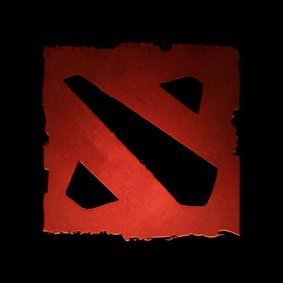

Hobbies
For now, my only hobbies are playing games and sleeping. My go-to games are gacha games, rhythm games, MOBA, RTS, soul games, shooting games, or any games that I find interesting and fun. Im trying to find a hobby that really interests me so that I don't get tired of it. One of them is programming, and the others can be drawing, playing an instrument, or physical fitness.
